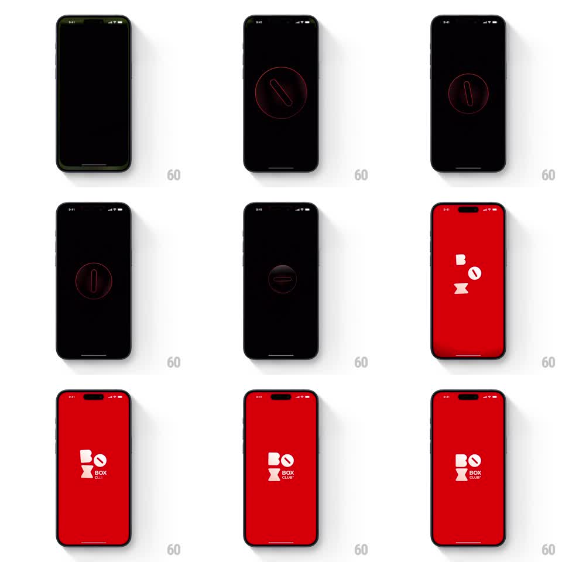

Media
Frame-by-frame

Rebuild this animation 1:1: Box Box Club's splash - on a black screen a red neon circle with a rotating slash element spins and glows, a radial red glow expands from the center until the whole background floods red, and the white Box Box Club logo letters (B, O, X) tumble in and assemble into the lockup with "BOX CLUB" beneath.

Rebuild this animation 1:1: Box Box Club's splash - on a black screen a red neon circle with a rotating slash element spins and glows, a radial red glow expands from the center until the whole background floods red, and the white Box Box Club logo letters (B, O, X) tumble in and assemble into the lockup with "BOX CLUB" beneath. ## Integration Integration: stack-agnostic spec - springs given as stiffness/damping, timed motions as duration + curve; map every value to your framework and animation library of choice. ## Scene Black splash screen. First: a thin red neon ring with a pill-shaped slash inside, rotating. Then: the background becomes solid red and white geometric letters - a square B, a round O with a diagonal cut, an hourglass X - assemble mid-screen with "BOX CLUB" in small caps beside the X. ## Motion spec Pattern: neon spinner with radial color flood into logo assembly. - The neon ring fades in (200ms) and its inner slash rotates continuously (1.2s per turn, linear) with a pulsing red glow (opacity 0.5 -> 1, 900ms). - The ring accelerates (rotation ramps to 0.4s per turn over 600ms) and the glow expands into a radial flood that fills the screen red (500ms ease-in, scale from center 0 -> 3x screen diagonal). - On full red: the three letterforms tumble in from above (translateY -60pt -> 0, rotate +/-20deg -> 0, spring ~300/16, 90ms stagger) and snap into the lockup. - "BOX CLUB" text fades in beside the X (200ms) with a slight letter-spacing settle (tracking 4pt -> 2pt). - The assembled logo holds with a faint glow pulse (scale 1.0 -> 1.01, 2s). ## Calibration - The flood is radial from the ring's center - the ring is the origin of the red. - Letterforms are chunky geometry, not a typeface - preserve their shapes exactly. ## Reduced motion Ring fades in, background cuts to red, logo fades in assembled. ## Don't miss - The O carries the diagonal slash from the spinner - visual continuity between phases. - The final red is the brand red, fully saturated - no gradient left over.